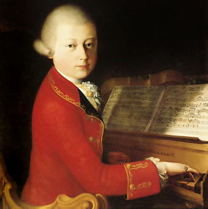
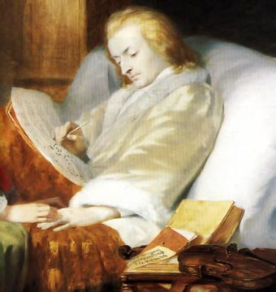

Considerado por muchos como el mayor genio musical de todos los tiempos, Wolfgang Amadeus Mozart compuso una obra original y poderosa que abarcó géneros tan distintos como la ópera bufa, la música sacra y las sinfonías. El compositor austriaco se hizo célebre no únicamente por sus extraordinarias dotes como músico, sino también por su agitada biografía personal, marcada por la rebeldía, las conspiraciones en su contra y su fallecimiento prematuro. Personaje rebelde e impredecible, Mozart prefiguró la sensibilidad romántica y fue, junto con Händel, uno de los primeros compositores que intentaron vivir al margen del mecenazgo de nobles y religiosos, hecho que ponía de relieve el paso a una mentalidad más libre respecto a las normas de la época. Su carácter anárquico y ajeno a las convenciones le granjeó la enemistad de sus competidores y le creó dificultades con sus patrones.
El más precoz de los genios

Pocos meses después, Leopold se vio obligado a dar lecciones a los dos y quedó estupefacto al contemplar a su hijo de cuatro años leer las notas sin dificultad y tocar minués con más facilidad con que se tomaba la sopa. Pronto fue evidente que la música era la segunda naturaleza del precoz Wolfgang, capaz a tan tierna edad de memorizar cualquier pasaje escuchado al azar, de repetir al teclado las melodías que le habían gustado en la iglesia y de apreciar con tanto tino como inocencia las armonías de una partitura.
Un Réquiem para su propia muerte

Mucho se ha escrito sobre la muerte de Mozart. La idea romántica de que fue envenenado tenía incluso un protagonista: Antonio Salieri, músico de éxito de la época al que la leyenda dibuja como un artista mediocre que supo, como ninguno en su época, comprender el original genio de Mozart, y, muerto de envidia, no pudo soportar la idea de que un hombre aniñado tuviera semejante don. El paroxismo llegó al extremo de creer que Mozart fue enterrado en una fosa común para borrar las huellas del homicidio. Hasta tal punto se extendió esta historia que se convirtió en el argumento de la ópera Mozart y Salieri de Rimski-Kórsakov, de una obra de teatro del célebre escritor ruso Alexander Pushkin y del drama Amadeus de Peter Shaffer (texto en el que se basa la exitosa película homónima de Milos Forman, estrenada en 1984 y protagonizada por Tom Hulce). No existe ningún referente histórico que pueda corroborar dicha versión.